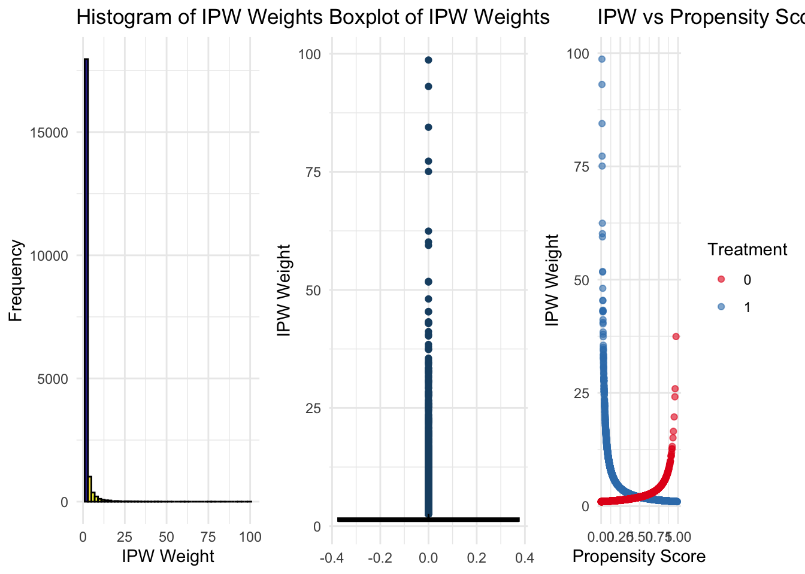
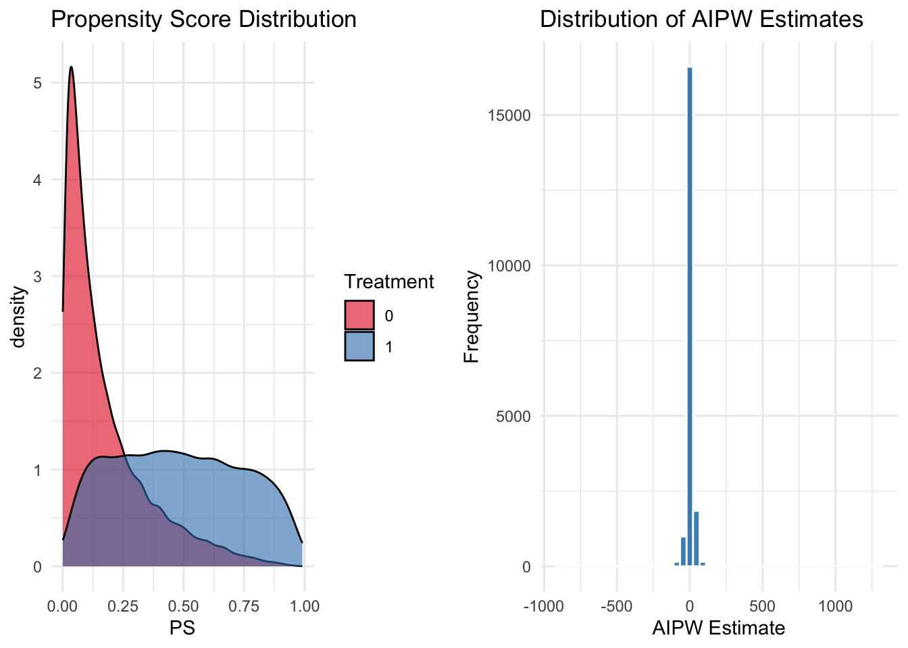
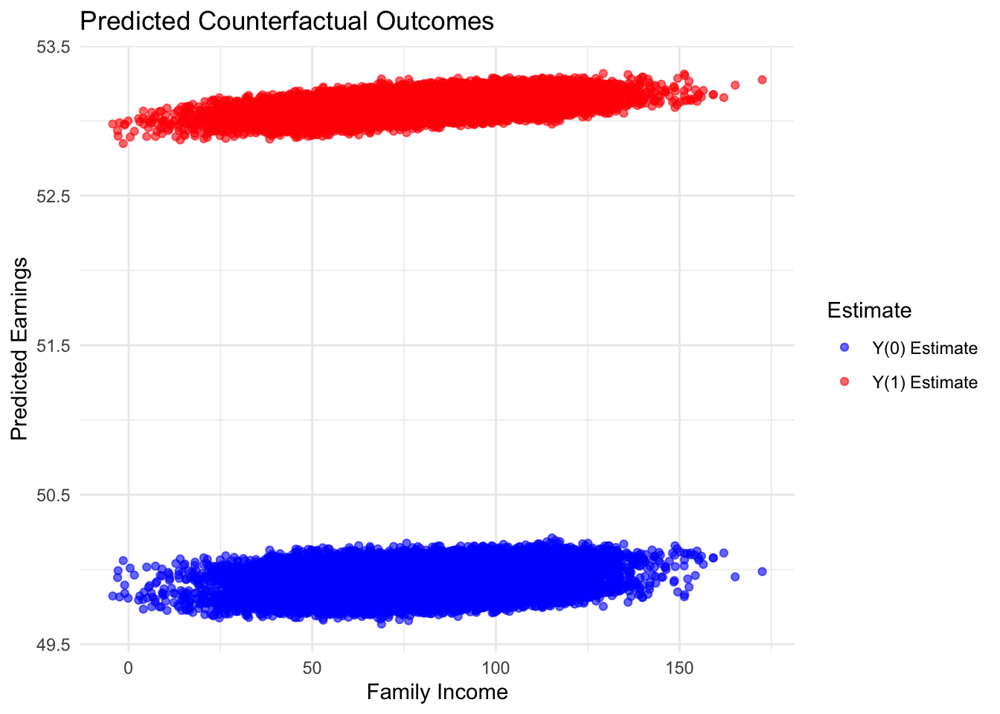

Chapter 21 Inverse Weighting and Doubly Robust Estimation
This chapter continues our exploration of causal inference under the selection on observables framework, building on the matching and propensity score methods introduced in the previous chapter. While those approaches create balance by pairing or weighting units based on covariates, they often face challenges with high-dimensional data or when overlap is limited. Here, we turn to inverse probability weighting (IPW) and doubly robust (DR) estimators—two influential techniques that extend the logic of propensity scores to construct weighted samples that approximate randomized experiments.
These methods help reduce reliance on strong modeling assumptions by reweighting or augmenting the data in ways that address potential confounding. We begin by introducing IPW, which uses estimated treatment probabilities to balance treated and control groups across observed covariates. We then turn to doubly robust estimators, such as Augmented IPW (AIPW), which combine outcome modeling and weighting to offer consistent estimates even if only one of the two models is correctly specified. Through theoretical explanations, simulations, and implementation in R, this chapter provides practical tools to estimate average treatment effects and diagnose potential pitfalls in applied settings.
21.1 Inverse Probability Weighting (IPW)
IPW, or Inverse Probability Weighting, adjusts for selection bias by weighting each observation by the inverse of its treatment probability, given covariates. This makes treated and control groups comparable, mimicking randomization. For applied economists, it is vital in policy evaluation, like assessing job training impacts on earnings, where data is not randomly assigned.
This approach, based on Horvitz and Thompson (1952), assigns weights to each observation based on the estimated propensity score \(p(X_i)\) at the individual level, which is the probability of receiving treatment given covariates. For each individual in treatment group (\(D_i = 1\)) the weight is \(\omega_i = \frac{1}{p(X_i)}\). This adjusts for how “likely” they were to receive treatment based on their covariates. For each individual in the control group (\(D_i = 0\)), the weight is \(\omega_i = \frac{1}{1 - p(X_i)}\). This adjusts for how “likely” they were to not receive treatment based on their covariates.
Each individual’s outcome (\(Y_i\)) is reweighted by their assigned weight. For example, a treated individual with \(p(X_i) = 0.2\) would have their outcome weighted by \(\frac{1}{0.2} = 5\), reflecting their relative rarity in the treated group. A control individual with \(p(X_i) = 0.8\) would have their outcome weighted by \(\frac{1}{0.2} = 5\) for their likelihood of not being treated. These weights adjust for the likelihood of treatment or control assignment, ensuring that treated and control groups become comparable in the reweighted pseudo-population.
With unconfoundedness, positivity, and SUTVA assumptions, the Average Treatment Effect (ATE) is defined as the difference between the expected outcomes under treatment and control and is estimated using the IPW method as:
\[\begin{align} \delta_{\text{ATE}} &= \mathbb{E}[Y(1) - Y(0)] = \mathbb{E}[Y(1)] - \mathbb{E}[Y(0)] \notag \\ &= \mathbb{E}\left[\frac{D_i Y_i}{p(X_i)}\right] - \mathbb{E}\left[\frac{(1 - D_i) Y_i}{1 - p(X_i)}\right] = \frac{1}{N} \left( \sum_{i=1}^{N} \frac{D_i Y_i}{p(X_i)} - \sum_{i=1}^{N} \frac{(1 - D_i) Y_i}{1 - p(X_i)} \right) \end{align}\]
This method reweights each observed outcome, adjusting for selection bias. However, extreme propensity scores can lead to instability, so weights are often normalized to sum to 1 within each group:
\[\begin{equation} \omega_{i_{Treated}}^{\text{norm}} = \frac{\omega_i}{\sum_{i=1}^{N} \omega_i D_i}, \quad \omega_{i_{Control}}^{\text{norm}} = \frac{\omega_i}{\sum_{i=1}^{N} \omega_i (1 - D_i)} \end{equation}\]
The Hajek estimator is a stabilized alternative to the Horvitz-Thompson estimator, reducing sensitivity to extreme weights:
\[\begin{equation} \delta_{\text{ATE}}^{\text{Hajek}} = \frac{\sum_{i=1}^{N} D_i \frac{Y_i}{p(X_i)}}{\sum_{i=1}^{N} \frac{D_i}{p(X_i)}} - \frac{\sum_{i=1}^{N} (1 - D_i) \frac{Y_i}{1 - p(X_i)}}{\sum_{i=1}^{N} \frac{1 - D_i}{1 - p(X_i)}} \end{equation}\]
In most practical settings, the Hajek estimator is favored for its improved stability and reduced variance.
As with unconfoundedness and SUTVA, which we discussed earlier, the positivity assumption is crucial for IPW. The positivity condition (overlap condition) ensures that every individual has a nonzero probability of receiving either treatment or control, meaning \(0 < p(X_i) < 1\) for all \(X_i\). If some individuals always receive treatment (\(p(X_i) = 1\)) or never do (\(p(X_i) = 0\)), there are no comparable observations in the other group, making it impossible to estimate counterfactual outcomes. Violations lead to unstable inverse probability weights, where \(\frac{1}{p(X_i)}\) or \(\frac{1}{1 - p(X_i)}\) become excessively large, increasing variance and reducing reliability. To address this, researchers often trim extreme propensity scores (e.g., below 0.05 or above 0.95), restrict analysis to regions of common support, or use stabilized weights to reduce sensitivity to extreme values. When positivity violations are severe, alternative approaches like matching or entropy balancing may be preferable. Ensuring adequate overlap between treated and control groups by inspecting propensity score distributions is crucial before applying IPW.
IPW retains all observations, provided there is sufficient overlap in propensity scores between treated and control units. Common diagnostics include checking for extreme weights and assessing balance post-weighting. Popular implementations in R include the WeightIt and twang packages, which streamline weight estimation and diagnostic evaluation.
IPW is a simple method with a strong theoretical foundation, providing a smooth approach to causal estimation by explicitly defining the target population and achieving global covariate balance. It also extends naturally to more complex settings, making it a flexible tool in observational studies. However, IPW is highly sensitive to misspecification of the propensity score model, which can lead to biased estimates if key confounders are omitted or functional forms are incorrect. Additionally, when propensity scores are close to 0 or 1, extreme weights can cause instability, increasing variance and reducing reliability. Addressing these issues often requires ad hoc adjustments, such as trimming extreme weights or using stabilized weighting methods, adding a layer of complexity to its implementation.
The Inverse Probability Weighting (IPW) simulation demonstrates how to estimate the causal effect of college graduation on earnings by reweighting observations based on their propensity scores. This approach addresses selection bias by adjusting the distribution of treated and control groups, ensuring that they are comparable in terms of observed characteristics. The dataset consists of 20,000 individuals, with treated units representing college graduates and control units representing non-graduates. Key covariates include family income, a continuous variable, and a binary covariate, which influence the probability of treatment assignment.
To implement IPW, we first estimate propensity scores using logistic regression, modeling the probability of college graduation based on observed covariates. Using these estimated probabilities, we compute IPW weights, where treated individuals receive a weight of 1 divided by their propensity score, and control individuals receive 1 divided by one minus their propensity score. This reweighting process adjusts the sample so that the distribution of covariates in the control group mimics that of the treated group. Additionally, we incorporate the Hajek estimator, a normalized version of IPW that ensures weights sum to one within each group, which improves efficiency in finite samples.
One of the primary challenges in IPW estimation is positivity violations, where some observations have propensity scores close to zero or one, leading to excessively large weights. To address this, we apply weight trimming, removing observations with propensity scores below 0.01 or above 0.99 to improve numerical stability and mitigate undue influence from extreme values. After computing weights, we conduct balance checks before and after weighting to assess whether the reweighted sample achieves better covariate balance between treated and control groups.
To estimate the treatment effect, we use weighted regression models, incorporating IPW and Hajek-IPW as weights in a regression of earnings on treatment status. If the weighting process is effective, the estimated treatment effect should closely reflect the true causal impact of college graduation on earnings. However, excessive weight variability can inflate standard errors and lead to unreliable inference.
To further evaluate the quality of the weighting process, we visualize weight distributions and balance diagnostics. Summary statistics and quantiles provide insight into the range and presence of extreme weights. Histograms and boxplots reveal overall weight distributions, highlighting potential outliers. Scatter plots help examine the relationship between propensity scores and weights, indicating whether extreme weights are concentrated in certain regions of the score distribution. If many extreme weights are present, it may suggest poor overlap between treated and control groups, necessitating adjustments such as weight truncation or re-specification of the propensity score model.
This simulation highlights both the strengths and limitations of IPW as a causal inference method. While weighting can effectively reduce selection bias and improve balance, it is sensitive to model specification and the presence of extreme weights. Careful diagnostics, such as trimming, balance checks, and visualization, are essential to ensure that IPW produces reliable and interpretable estimates of treatment effects.
# Load necessary libraries
library(WeightIt) # For IPW estimation
library(survey) # For weighted regression
library(dplyr) # For data manipulation
library(tableone) # For balance assessment
library(ggplot2) # For visualization
# Set seed for reproducibility
set.seed(42)
# Define sample sizes
N <- 20000
NT <- 5000
NC <- N - NT
# Generate earnings for treated and control groups
earnings_non_graduates <- rnorm(NC, mean = 50, sd = 10)
earnings_graduates <- rnorm(NT, mean = 53, sd = 10)
# Generate covariates
family_income_non_graduates <- rnorm(NC, mean = 70, sd = 20)
family_income_graduates <- rnorm(NT, mean = 95, sd = 20)
# Generate 1 continuous variable
cont_var1_non_graduates <- rnorm(NC, mean = 5, sd = 2)
cont_var1_graduates <- rnorm(NT, mean = 6, sd = 2)
# Generate 1 binary variable
binary_var1_non_graduates <- rbinom(NC, 1, 0.4)
binary_var1_graduates <- rbinom(NT, 1, 0.6)
# Merge into a single dataset
data <- data.frame(
ID = 1:N,
Treatment = c(rep(1, NT), rep(0, NC)),
FamilyIncome = c(family_income_graduates, family_income_non_graduates),
ContVar1 = c(cont_var1_graduates, cont_var1_non_graduates),
BinaryVar1 = c(binary_var1_graduates, binary_var1_non_graduates),
Earnings = c(earnings_graduates, earnings_non_graduates)
)
# --- STEP 2: Estimate Propensity Scores Using Logistic Regression ---
ps_model <- glm(Treatment ~ FamilyIncome + ContVar1 + BinaryVar1,
data = data, family = binomial)
data$PS <- predict(ps_model, type = "response") # Predict propensity scores
# --- STEP 3: Compute IPW Weights ---
# Standard weights
data$IPW <- ifelse(data$Treatment == 1, 1/data$PS, 1/(1 - data$PS))
# Normalize weights (Hajek Estimator)
data$IPW_Hajek <- ifelse(data$Treatment == 1,
data$IPW / sum(data$IPW[data$Treatment == 1]),
data$IPW / sum(data$IPW[data$Treatment == 0]))
# --- STEP 4: Trim Extreme Weights (Address Positivity Violation) ---
trim_threshold <- 0.01 # Drop observations with p(X_i) < 0.01 or > 0.99
data_trimmed <- data %>% filter(PS > trim_threshold & PS < (1 - trim_threshold))
# --- STEP 5: Balance Checks Before and After Weighting ---
table1_unweighted <- CreateTableOne(vars=c("FamilyIncome","ContVar1","BinaryVar1"),
strata = "Treatment", data = data, test = TRUE)
table1_weighted <- svydesign(~1, weights = ~IPW, data = data) %>%
svytable(~Treatment, design = .)
print(table1_unweighted) # Balance before weighting## Stratified by Treatment
## 0 1 p test
## n 15000 5000
## FamilyIncome (mean (SD)) 70.08 (20.24) 95.01 (20.18) <0.001
## ContVar1 (mean (SD)) 4.99 (1.98) 5.99 (1.99) <0.001
## BinaryVar1 (mean (SD)) 0.40 (0.49) 0.60 (0.49) <0.001## Treatment
## 0 1
## 19964.70 19596.37# --- STEP 6: Estimate Treatment Effects Using Weighted Regression ---
ipw_model <- svydesign(~1, weights = ~IPW, data = data)
ipw_estimate <- svyglm(Earnings ~ Treatment, design = ipw_model)
hajek_model <- svydesign(~1, weights = ~IPW_Hajek, data = data)
hajek_estimate <- svyglm(Earnings ~ Treatment, design = hajek_model)
cat("ATT (IPW):", coef(ipw_estimate)[2], "\n")## ATT (IPW): 3.219614## ATT (Hajek IPW): 3.219614# --- STEP 7: Visualization of Weight Distribution and Balance ---
# (A) Summary Statistics for IPW Weights to assess outliers
summary(data$IPW)## Min. 1st Qu. Median Mean 3rd Qu. Max.
## 1.001 1.067 1.201 1.978 1.664 98.676## 1% 5% 95% 99%
## 1.005573 1.015336 5.077119 14.756247# (B) Histogram of IPW Weights
plot_IPW <- ggplot(data, aes(x = IPW, fill = ..count..)) +
geom_histogram(bins = 50, color = "black", alpha = 0.9) +
scale_fill_viridis_c(option = "C", direction = -1) +
labs(title = "Histogram of IPW Weights", x = "IPW Weight", y = "Frequency") +
theme_minimal() +
theme(legend.position = "none")
# (C) Boxplot of IPW Weights to visually detect outliers
plot_IPWoutliers <- ggplot(data, aes(y = IPW)) +
geom_boxplot(fill = "#66C2A5", color = "black", outlier.colour = "#1B4F72") +
labs(title = "Boxplot of IPW Weights", y = "IPW Weight") +
theme_minimal()
# (D) Scatter Plot: IPW Weights vs. Propensity Scores by Treatment
plot_comparison <- ggplot(data, aes(x = PS, y = IPW, color = as.factor(Treatment))) +
geom_point(alpha = 0.6, size = 1.5) +
scale_color_brewer(palette = "Set1", name = "Treatment") +
labs(title = "IPW vs Propensity Score",
x = "Propensity Score", y = "IPW Weight") +
theme_minimal()
# Combine the three figures in a single row
library(gridExtra)
grid.arrange(plot_IPW, plot_IPWoutliers, plot_comparison, ncol = 3)
Machine learning driven approaches improve IPW by reducing reliance on strong functional form assumptions, improving covariate balance, and stabilizing weights. Methods like Covariate Balancing Propensity Score, entropy balancing, Targeted Maximum Likelihood Estimation , and Doubly robust estimators such as Augmented IPW (AIPW) which we discuss below have gained traction in applied econometrics and causal inference, making IPW more robust and scalable in high-dimensional settings.
Several statistical packages facilitate Inverse Probability Weighting (IPW) across different programming environments. In Stata, the primary package for IPW is teffects ipw, which estimates treatment effects using inverse probability weighting, along with ipw for more flexible weight estimation and balance diagnostics. The psmatch2 and causaltrt packages also offer IPW functionality with additional propensity score-based approaches. In R, besides MatchIt, the WeightIt package provides a generalized framework for estimating various types of weights, including IPW, while cobalt supports comprehensive balance diagnostics and visualization. The survey package allows for weighted regression modeling with IPW. In Python, the econml package from Microsoft offers advanced causal inference methods, including IPW and doubly robust estimation, while causalml provides implementations for both IPW and machine learning-based weighting approaches. Additionally, statsmodels supports logistic regression for propensity score estimation, which can be used to compute inverse probability weights manually.
Recent research has explored ways to improve the reliability of IPW estimators in applied economics. Słoczyński, Uysal, and Wooldridge (2023) examine the equivalence of IPW, augmented inverse probability weighting (AIPW), and inverse probability weighted regression adjustment (IPWRA). They demonstrate that employing covariate balancing techniques improves the performance of IPW estimators, offering practical guidance for applied researchers. Similarly, Ma and Wang (2018) address challenges posed by small denominators in IPW, proposing a robust inference procedure that adapts to various asymptotic distributions, thereby improving estimator reliability in empirical economic analysis.
21.2 Doubly Robust Estimators - AIPW
Doubly Robust (DR) estimators improve upon Inverse Probability Weighting (IPW) by incorporating an additional outcome regression model alongside the propensity score model. Their key advantage is that they provide a valid estimate of the treatment effect if either the propensity score model or the outcome model is correctly specified, offering protection against misspecification. This doubly robust property makes them particularly useful in observational studies, where modeling assumptions are often uncertain.
The Augmented Inverse Probability Weighting (AIPW) estimator is a widely used DR method for estimating the Average Treatment Effect (ATE). It remains consistent as long as at least one of the two models—the propensity score \(\hat{p}(X_i)\) or the outcome regression \(\hat{f}(X_i)\)—is correctly specified. If the propensity score model is correct, the IPW component adjusts for selection bias, making the outcome model unnecessary; however, pure IPW suffers from high variance, especially when \(p(X_i) \approx 0\) or \(p(X_i) \approx 1\). Conversely, if the outcome regression model is correct, the regression term provides a valid treatment effect estimate, making the propensity score unnecessary. When both models are correctly specified, AIPW achieves the lowest variance, improving efficiency. If both models are correct, it is more efficient than using either method alone. Read the derivation of AIPW and the proof of its doubly robust property in the last section.
AIPW builds on IPW but, instead of weighting raw outcomes \(Y\), it weights residuals \(Y - f(X)\), ensuring robustness even under model misspecification. The adjustment term \(f_1(X) - f_0(X)\) further corrects any remaining bias if the regression model is accurate. This structure makes AIPW a direct extension of IPW, incorporating regression-based correction to improve robustness and efficiency. Together, these components make the AIPW estimator doubly robust, meaning it yields an unbiased estimate of the ATE if either the propensity score model or the outcome model is correct, but not necessarily both. The estimator is expressed as:
\[\begin{equation} \hat{\delta}_{AIPW}^{ATE} = \frac{1}{n} \sum_{i=1}^{n} \left[ \frac{D_i (Y_i - \hat{f}_1(X_i))}{\hat{p}(X_i)} - \frac{(1 - D_i) (Y_i - \hat{f}_0(X_i))}{1 - \hat{p}(X_i)} + \hat{f}_1(X_i) - \hat{f}_0(X_i) \right] \end{equation}\]
where \(\hat{p}(X_i)\) is the estimated propensity score, \(\hat{f}_1(X_i) = \hat{E}[Y | X_i, D = 1]\) is the predicted outcome for treated units, and \(\hat{f}_0(X_i) = \hat{E}[Y | X_i, D = 0]\) is the predicted outcome for control units. ( \(\hat{e}(X_i)\) and \(\hat{m}(X_i)\) are also very common notation for propensity score and outcome models, respectively.)
The AIPW estimator stands out because it combines Inverse Probability Weighting (IPW) with regression adjustment. The first two terms in the formula use IPW to account for selection bias by weighting the residuals \((Y - \hat{f}(X))\) instead of the raw outcomes. Instead of just multiplying \(Y\) by weights as in IPW, AIPW first removes the predictable part of \(Y\) using \(f(X)\) .This IPW residual adjustment ensures balance between treated and untreated groups by creating a pseudo-outcomes where treatment assignment is independent of covariates. This residual is then weighted by \(1/{{\hat{p}(X_i)}}\) (for treated) and \(1/1-{{\hat{p}(X_i)}}\) (for controls).
The final term, \(\hat{f}_1(X) - \hat{f}_0(X)\), adds a regression-based correction by explicitly modeling the conditional outcomes for treated and control groups. This regression adjustment ensures the estimator remains consistent even if the propensity score model is misspecified, provided the outcome regression models \(\hat{f}_1(X)\) and \(\hat{f}_0(X)\) are correctly specified. Together, these components make the AIPW estimator doubly robust, meaning it yields an unbiased estimate of the ATE if either the propensity score model or the outcome model is correct, but not necessarily both. If both models are correct, it is more efficient than using either method alone
Best practices for implementing the Augmented Inverse Probability Weighting (AIPW) estimator include ensuring covariate balance, verifying the overlap assumption, and using cross-fitting to improve efficiency and prevent overfitting. Checking covariate balance and overlap is essential, just as discussed in the matching and IPW sections, to ensure that treatment and control groups are comparable and that the propensity scores are well-distributed, avoiding extreme values near 0 or 1. Another crucial step is cross-fitting, a widely recommended technique in machine learning that mitigates overfitting when estimating the propensity score \(\hat{p}(X)\) and the outcome models \(\hat{f}_1(X)\) and \(\hat{f}_0(X)\). The simplest form of cross-fitting involves randomly splitting the sample into two parts, using one half to estimate the propensity score and outcome models, and the other half to compute treatment effects, before swapping the roles and averaging the results. This approach ensures that the estimator does not overfit to a particular subset of the data while still using the full sample efficiently. cross-fitting significantly improves precision and derives formal error bounds, making it a key methodological improvement over traditional estimation approaches.
In R, the AIPW package is specifically designed for implementing the Augmented Inverse Probability Weighting estimator. This package facilitates the estimation of average causal effects by combining propensity score modeling with outcome regression, offering a doubly robust approach. It supports the use of machine learning algorithms for flexible covariate adjustment and includes features like cross-fitting to improve estimation precision. The package is suitable for both randomized controlled trials and observational studies. Simulation studies have shown that cross-fitting significantly reduces bias and improves confidence interval coverage for doubly robust estimators fitted with machine learning algorithms. To check the method, simulations, and comparisons with other methods, see (PMC Article).
Beyond AIPW, several advanced doubly robust estimators have emerged, incorporating flexible machine learning techniques to improve efficiency and robustness. Targeted Maximum Likelihood Estimation (TMLE) and the Doubly Robust Learning (DRL) framework are among the most widely used approaches. TMLE, available in the tmle R package, applies iterative bias correction to improve causal effect estimation, making it particularly effective in complex observational studies. We will discuss DL-learning more in the chapter on metal-learners.
TMLE refines the initial outcome regression estimate using a clever covariate adjustment based on the estimated propensity score:
\[\begin{equation} \hat{\tau}_{TMLE} = \frac{1}{N} \sum_{i=1}^{N} \left[ \mu_1^*(X_i) - \mu_0^*(X_i) \right] \end{equation}\]
where \(\mu_1^*(X_i)\) and \(\mu_0^*(X_i)\) are updated using a logistic regression-based correction term.
For a detailed introduction to TMLE, see Gruber & van der Laan (2012). Practical implementation is available in the tmle R package (Lendle et al., 2017) and its extensions in the tlverse ecosystem (TLearn R Package).
Doubly robust learning methods, on the other hand, leverages machine learning algorithms (e.g., penalized regression, neural networks, random forests) to estimate both the propensity score and outcome models instead of relying on a single model being correct like in AIPW, ensuring robustness and efficiency. This approach is particularly useful in high-dimensional settings with complex interactions and nonlinear relationships. For a detailed discussion on DLR methods for ATE, see the 2024 DRL Tutorial. However, since DRL is primarily designed for CATE and heterogeneous treatment effect estimation, it will be covered in the chapter on heterogeneous causal effects.
# Load necessary libraries
library(SuperLearner) # For flexible ML-based outcome modeling
library(survey) # For weighted estimation
library(dplyr) # For data manipulation
library(ggplot2) # For visualization
# Set seed for reproducibility
set.seed(42)
# Define sample sizes
N <- 20000
NT <- 5000
NC <- N - NT
# Generate earnings for treated and control groups
earnings_non_graduates <- rnorm(NC, mean = 50, sd = 10)
earnings_graduates <- rnorm(NT, mean = 53, sd = 10)
# Generate covariates
family_income_non_graduates <- rnorm(NC, mean = 70, sd = 20)
family_income_graduates <- rnorm(NT, mean = 95, sd = 20)
# Generate 1 continuous variable
cont_var1_non_graduates <- rnorm(NC, mean = 5, sd = 2)
cont_var1_graduates <- rnorm(NT, mean = 6, sd = 2)
# Generate 1 binary variable
binary_var1_non_graduates <- rbinom(NC, 1, 0.4)
binary_var1_graduates <- rbinom(NT, 1, 0.6)
# Merge into a single dataset
data <- data.frame(
ID = 1:N,
Treatment = c(rep(1, NT), rep(0, NC)),
FamilyIncome = c(family_income_graduates, family_income_non_graduates),
ContVar1 = c(cont_var1_graduates, cont_var1_non_graduates),
BinaryVar1 = c(binary_var1_graduates, binary_var1_non_graduates),
Earnings = c(earnings_graduates, earnings_non_graduates)
)
# --- STEP 2: Estimate Propensity Scores Using Logistic Regression ---
ps_model <- glm(Treatment ~ FamilyIncome + ContVar1 + BinaryVar1,
data = data, family = binomial)
data$PS <- predict(ps_model, type = "response") # Predict propensity scores
# --- STEP 3: Compute Inverse Probability Weights ---
# Standard IPW
data$IPW <- ifelse(data$Treatment == 1, 1 / data$PS, 1 / (1 - data$PS))
# --- STEP 4: Estimate Outcome Models ---
# Model outcome separately for treated and control groups
outcome_model_treated <- lm(Earnings ~ FamilyIncome + ContVar1 + BinaryVar1,
data = data[data$Treatment == 1, ])
outcome_model_control <- lm(Earnings ~ FamilyIncome + ContVar1 + BinaryVar1,
data = data[data$Treatment == 0, ])
# Predict counterfactual outcomes
data$Y1_hat <- predict(outcome_model_treated, newdata = data) # Predicted Y(1)
data$Y0_hat <- predict(outcome_model_control, newdata = data) # Predicted Y(0)
# --- STEP 5: Compute AIPW Estimator ---
data$AIPW <- (data$Treatment * (data$Earnings - data$Y1_hat) / data$PS) -
((1 - data$Treatment) * (data$Earnings - data$Y0_hat) / (1 - data$PS)) +
(data$Y1_hat - data$Y0_hat)
AIPW_ATE <- mean(data$AIPW)
cat("ATE (AIPW):", AIPW_ATE, "\n")## ATE (AIPW): 3.21644# --- STEP 6: Cross-Fitting for Robustness ---
K <- 5 # Number of folds
folds <- sample(rep(1:K, length.out = N))
AIPW_estimates <- numeric(K)
for (k in 1:K) {
train_data <- data[folds != k, ]
test_data <- data[folds == k, ]
# Train propensity score model using covariates: FamilyIncome, ContVar1, BinaryVar1
ps_model_k <- glm(Treatment ~ FamilyIncome + ContVar1 + BinaryVar1,
data = train_data, family = binomial)
test_data$PS_k <- predict(ps_model_k, newdata = test_data, type = "response")
# Train outcome models on the training fold for treated and control groups
outcome_model_treated_k <- lm(Earnings ~ FamilyIncome + ContVar1 + BinaryVar1,
data = train_data[train_data$Treatment == 1, ])
outcome_model_control_k <- lm(Earnings ~ FamilyIncome + ContVar1 + BinaryVar1,
data = train_data[train_data$Treatment == 0, ])
# Predict counterfactual outcomes in the test fold
test_data$Y1_hat_k <- predict(outcome_model_treated_k, newdata = test_data)
test_data$Y0_hat_k <- predict(outcome_model_control_k, newdata = test_data)
# Compute AIPW for the fold
test_data$AIPW_k <- (test_data$Treatment * (test_data$Earnings - test_data$Y1_hat_k)
/ test_data$PS_k) - ((1-test_data$Treatment)*(test_data$Earnings-test_data$Y0_hat_k)
/ (1 - test_data$PS_k)) + (test_data$Y1_hat_k - test_data$Y0_hat_k)
AIPW_estimates[k] <- mean(test_data$AIPW_k)
}
AIPW_crossfit <- mean(AIPW_estimates)
cat("ATE (Cross-Fitted AIPW):", AIPW_crossfit, "\n")## ATE (Cross-Fitted AIPW): 3.227918# --- STEP 7: Visualization and Diagnostics ---
## (A) Propensity Score Distribution using grayscale tones
plot_PS <- ggplot(data, aes(x = PS, fill = as.factor(Treatment))) +
geom_density(alpha = 0.6, color = "black") +
scale_fill_brewer(palette = "Set1", name = "Treatment") +
labs(title = "Propensity Score Distribution") +
theme_minimal()
## (B) Distribution of AIPW Estimates
plot_AIPW <- ggplot(data, aes(x = AIPW)) +
geom_histogram(bins = 50, fill = "#0072B2", alpha = 0.8, color = "white") +
labs(title = "Distribution of AIPW Estimates", x = "AIPW Estimate", y = "Frequency") +
theme_minimal()
# Combine the two figures in a single row
library(gridExtra)
grid.arrange(plot_PS, plot_AIPW, ncol = 2)
## (C) Estimated Counterfactual Outcomes using FamilyIncome as x-axis
ggplot(data, aes(x = FamilyIncome)) +
geom_point(aes(y = Y1_hat, color = "Y(1) Estimate"), alpha = 0.6) +
geom_point(aes(y = Y0_hat, color = "Y(0) Estimate"), alpha = 0.6) +
scale_color_manual(values = c("Y(1) Estimate" = "red",
"Y(0) Estimate" = "blue")) +
labs(title = "Predicted Counterfactual Outcomes",
x = "Family Income", y = "Predicted Earnings",
color = "Estimate") +
theme_minimal()
This simulation uses the same dataset as earlier to estimate propensity scores via logistic regression and compute inverse probability weights (IPW) for causal inference. Outcome models are then estimated separately for the treated and control groups to predict counterfactual outcomes. The Augmented IPW (AIPW) estimator combines these predictions with the observed outcomes to compute the average treatment effect (ATE). To improve robustness, a cross-fitting procedure is implemented by partitioning the data into 5 folds and averaging the AIPW estimates across folds. Finally, the simulation visualizes the propensity score distribution and the distribution of the AIPW estimates using grayscale plots, and it displays the predicted counterfactual outcomes by Family Income, providing comprehensive diagnostics and insights into the quality of the weighting and the balance achieved.
Now, let’s show and discuss the comparison and bootstrapped standard deviations of these methods in a simple simulation, demonstrating that while the naive estimator is biased, the IPW estimator is unbiased with higher variance, and the AIPW estimator is unbiased with lower variance.
set.seed(42)
n_sim <- 100
n <- 1000
k <- 5
results <- data.frame(
ate_true = rep(2, n_sim),
ate_naive = numeric(n_sim),
ate_ipw = numeric(n_sim),
ate_aipw = numeric(n_sim)
)
for (sim in 1:n_sim) {
X1 <- rnorm(n, mean = 0, sd = 1)
X2 <- rnorm(n, mean = 0, sd = 1)
propensity <- 1 / (1 + exp(-(0.5 + 0.3 * X1 - 0.2 * X2)))
D <- rbinom(n, 1, propensity) #Treatment assignment
epsilon <- rnorm(n, mean = 0, sd = 1)
Y <- 10 + 2 * D + 0.5 * X1 + 0.5 * X2 + epsilon # Outcome model
data <- data.frame(Y, D, X1, X2)
# Naive estimate
mean_Y_treated <- mean(data$Y[data$D == 1])
mean_Y_control <- mean(data$Y[data$D == 0])
ate_naive <- mean_Y_treated - mean_Y_control
# Estimate propensity score on entire data for IPW
propensity_model <- glm(D ~ X1 + X2, data = data, family = binomial)
propensity_hat <- predict(propensity_model, type = "response")
# IPW estimates
treated_weights <- data$D / propensity_hat
mu1_ipw <- sum(data$Y[data$D == 1] *
treated_weights[data$D == 1]) / sum(treated_weights[data$D == 1])
control_weights <- (1 - data$D) / (1 - propensity_hat)
mu0_ipw <- sum(data$Y[data$D == 0] * control_weights[data$D == 0]) /
sum(control_weights[data$D == 0])
ate_ipw <- mu1_ipw - mu0_ipw
# Cross-fitting for AIPW
folds <- cut(1:n, breaks = k, labels = FALSE)
ate_aipw_folds <- numeric(k)
for (fold in 1:k) {
data_train <- data[folds != fold, ]
data_test <- data[folds == fold, ]
# Estimate propensity score on train data
propensity_model_train <- glm(D ~ X1 + X2, data = data_train, family = binomial)
propensity_hat_test <- predict(propensity_model_train, newdata = data_test,
type = "response")
# Estimate outcome model on train data
outcome_model_train <- lm(Y ~ D + X1 + X2, data = data_train)
# Create new data sets for potential outcomes for test data
newdata_treated <- data_test
newdata_treated$D <- 1
mu1_hat_test <- predict(outcome_model_train, newdata = newdata_treated)
newdata_control <- data_test
newdata_control$D <- 0
mu0_hat_test <- predict(outcome_model_train, newdata = newdata_control)
# Compute AIPW estimates for test data
term1_aipw1 <- (data_test$D / propensity_hat_test) * (data_test$Y - mu1_hat_test) +
mu1_hat_test
mu1_aipw_test <- mean(term1_aipw1)
term1_aipw0 <- ((1 - data_test$D) / (1 - propensity_hat_test)) *
(data_test$Y - mu0_hat_test) + mu0_hat_test
mu0_aipw_test <- mean(term1_aipw0)
ate_aipw_test <- mu1_aipw_test - mu0_aipw_test
ate_aipw_folds[fold] <- ate_aipw_test
}
# Average AIPW estimate across folds
mean_ate_aipw <- mean(ate_aipw_folds)
# Store results
results$ate_naive[sim] <- ate_naive
results$ate_ipw[sim] <- ate_ipw
results$ate_aipw[sim] <- mean_ate_aipw
}
# Summarize results
mean_naive <- mean(results$ate_naive)
sd_naive <- sd(results$ate_naive)
mean_ipw <- mean(results$ate_ipw)
sd_ipw <- sd(results$ate_ipw)
mean_aipw <- mean(results$ate_aipw)
sd_aipw <- sd(results$ate_aipw)
cat("Naive estimate: mean =", mean_naive, ", sd =", sd_naive, "\n")## Naive estimate: mean = 2.05036 , sd = 0.07109387## IPW estimate: mean = 1.99533 , sd = 0.06077192## AIPW estimate: mean = 1.995857 , sd = 0.05961602In this simulation, we compare naive, IPW, and AIPW estimators to assess the causal effect under confounding and their standard deviations. We run 100 replications of a data-generating process with 1,000 observations each. For each simulation, we first estimate the naive difference in means between treated and control groups. Next, we compute propensity scores using logistic regression and derive inverse probability weights (IPW) to adjust for confounding. The standard IPW estimate is obtained by reweighting the outcomes. We then implement a cross-fitting procedure for the augmented IPW (AIPW) estimator by partitioning the data into 5 folds; in each fold, we fit the propensity score and outcome models on the training set and predict potential outcomes for the test set. The final AIPW estimate is the average of the fold-specific estimates. This cross-fitted AIPW estimator is intended to provide a doubly robust estimate of the average treatment effect that combines the strengths of both outcome regression and IPW, thereby offering improved robustness to model misspecification.
Running the simulation, we expect the naive estimate to be biased due to confounding, the IPW estimate to be unbiased but with higher variance, and the AIPW estimate to be unbiased with lower variance—demonstrating its efficiency.The results show the mean and standard deviation of the naive, IPW, and AIPW estimates across the 100 simulations, highlighting the benefits of using doubly robust methods in causal inference.
21.3 Challenges of Selection on Observables
While the selection-on-observables framework provides a robust foundation for causal inference, it is not without significant limitations. These challenges arise from the assumptions and practical constraints inherent in this approach, which can compromise the validity of causal estimates.
Unverifiable Assumptions The selection-on-observables framework assumes that all confounding variables influencing both treatment assignment (\(D_i\)) and potential outcomes (\(Y_i(0), Y_i(1)\)) are observed and included in the covariates (\(X_i\)). This assumption, known as the Conditional Independence Assumption (CIA), is critical for unbiased causal inference but inherently untestable. Two main issues threaten the validity of this framework: selection bias and post-treatment bias.
Selection bias is essentially confounding, where a variable (\(Z_i\)) influences both the treatment and the outcome. If any confounder is omitted, the identification assumption fails, leading to biased estimates. For example, in estimating the effect of college scholarships on earnings, unobserved factors such as intrinsic motivation or family support may impact both scholarship receipt and future earnings. Failing to account for these confounders violates the CIA assumption. While including covariates correlated with unobserved confounders can mitigate this bias, it does not fully eliminate the problem. Indirect evidence, such as balance tests, can help validate the assumption but cannot conclusively confirm it. We discussed selection bias in detail in the previous chapter. The concept applies similarly to both completely random and “as good as” random studies.
Post-treatment bias occurs when variables affected by the treatment are included in the analysis. Introducing post-treatment variables undermines comparability by, in effect, comparing treated and untreated groups on outcomes influenced by the treatment. For instance, in the college scholarship example, conditioning on post-treatment variables such as college GPA or internship participation—both of which are influenced by receiving the scholarship—distorts the estimated effect. These variables act as outcomes of the treatment, and conditioning on them invalidates the causal interpretation. Post-treatment bias is problematic even in randomized experiments and is only avoidable if the treatment does not influence the variable being conditioned on—a rare scenario in practice.
Post-treatment bias can arise in several ways: controlling for post-treatment variables, using proxies measured after treatment, or selecting observations based on post-treatment criteria. For example, excluding students with low GPAs after scholarship receipt, or removing people with no income from the sample creates a selection problem, as these excluded units might systematically differ in unobserved ways.
The overall lesson is clear: do not condition on post-treatment variables. Including such variables or removing units based on post-treatment characteristics introduces bias by design and undermines causal inference. Researchers must carefully select covariates, ensuring they address confounding while avoiding post-treatment variables, to uphold the validity of SOO methods. However, the reliance on untestable assumptions means robustness checks and alternative identification strategies remain essential for reliable causal analysis in all observational studies.
Functional Form Misspecification: The relationship between covariates (\(X_i\)), treatment (\(D_i\)), and outcomes (\(Y_i\)) may be complex or nonlinear. Simple regression models, which assume a specific functional form, may fail to capture these complexities, leading to biased estimates. For example, if the effect of a scholarship on earnings varies nonlinearly with parental income or academic preparedness, a linear regression model may oversimplify these interactions, producing inaccurate results. Flexible approaches, such as nonparametric or machine learning methods, can help address this limitation.
Lack of Overlap: SOO methods require sufficient overlap in the covariate distributions of treated and untreated groups. When treated and untreated units do not share comparable covariate profiles, causal estimates become unreliable. For example, if only students from well-funded public schools receive scholarships, it becomes challenging to estimate the effect of scholarships on students from underfunded schools due to the lack of comparable untreated individuals in that subgroup. Techniques like propensity score matching or trimming can partially address this issue by restricting analysis to regions of overlap, but these approaches may reduce sample size and statistical power.
Dimensionality Problems:In high-dimensional settings with many covariates, SOO methods like matching may struggle to balance treated and untreated groups effectively. This problem is exacerbated in small samples, where achieving covariate balance becomes even more difficult. For instance, if a scholarship program’s eligibility depends on multiple criteria, such as parental income, test scores, and extracurricular activities, traditional matching methods may fail to ensure comparability across all dimensions. Machine learning tools, such as causal forests, offer promising solutions by handling high-dimensional covariates more flexibly.
Despite its strengths, we face all these significant challenges to estimate causal effect in the selection on observables methods. Careful design choices, such as selecting pre-treatment covariates, avoiding post-treatment variables, and adopting flexible modeling techniques, are crucial to mitigate these issues. However, the limitations of selection on observables methods underscore the importance of complementing them with robustness checks and alternative identification strategies to ensure reliable causal inference.
Over the past four chapters, we have developed a comprehensive set of tools for estimating causal effects under the selection on observables framework. Starting with regression adjustment, extending to modern high-dimensional methods like DML, and continuing with matching, IPW, and doubly robust estimators, these methods offer flexible strategies for controlling confounding when all relevant covariates are observed. However, they fundamentally rely on the unconfoundedness assumption—that, conditional on observed variables, treatment assignment is as good as random. When this assumption fails due to unmeasured or unobservable confounders, alternative identification strategies are needed. In the chapters that follow, we turn to methods designed to handle selection on unobservables—specifically, instrumental variables, difference-in-differences, synthetic control and regression discontinuity designs—which provide powerful tools for credible causal inference in more various observational settings.
21.4 Technical Note: Derivation and Doubly robust of the AIPW Estimator
To address the limitations of both regression-based and inverse probability weighting (IPW) estimators, we combine both approaches to construct the Augmented Inverse Probability Weighting (AIPW) estimator. This ensures that the estimator remains unbiased as long as either the propensity score model or the outcome model is correctly specified.
Remember for ATE, the outcome regression estimator is \(\hat{\delta}_{REG}^{ATE} = E[\hat{f}_1(X) - \hat{f}_0(X)]\). However, this estimator may be biased due to selection on unobservables. For ATE, we obtain the inverse probability weighting estimator is \(\hat{\delta}_{IPW}^{ATE} = E\left[ \frac{D Y}{p(X)} - \frac{(1 - D) Y}{1 - p(X)} \right]\). This estimator adjusts for treatment selection bias by weighting observations based on their propensity scores. However, pure IPW is known to suffer from high variance, particularly when \(p(X) \approx 0\) or \(p(X) \approx 1\), leading to instability in estimation.
To combine regression adjustment with weighting, we introduce \(f_1(X)\) within the IPW framework by adding and subtracting it inside the expectation. We rewrite \(E[Y(1)]\) of IPW by add and subtract \(f_1(X)\) inside the fraction:
\[\begin{equation} E[Y(1)] = E \left[ \frac{D (Y - f_1(X) + f_1(X))}{p(X)} \right] \end{equation}\]
Expanding the equation and using the linearity of expectation, \(E[aX+bY]=aE[X]+bE[Y]\), we get:
\[\begin{equation} E[Y(1)] = E \left[ \frac{D (Y - f_1(X))}{p(X)} + \frac{D f_1(X)}{p(X)} \right]= E \left[ \frac{D (Y - f_1(X))}{p(X)}\right] + E \left[ \frac{D f_1(X)}{p(X)} \right] \end{equation}\]
To the second term we apply the law of iterated expectations, \(E[A] = E[E[A | B]]\), where \(A = \frac{D f_1(X)}{p(X)}\) and \(B = X\), we can write:
\[\begin{equation} E \left[ \frac{D f_1(X)}{p(X)} \right] = E \left[ E \left[ \frac{D f_1(X)}{p(X)} \Big| X \right] \right]= E[f_1(X)] \end{equation}\]
Since both \(f_1(X)\) and \(p(X)\) are functions of \(X\), they are deterministic given \(X\) (once \(X\) is given (fixed), \(f_1(X)\) is a specific value and \(p(X)\) is a fixed probability, and both are no longer random), allowing us to factor them out in the inside expectation:
\[\begin{equation} E \left[ \frac{D f_1(X)}{p(X)} \Big| X \right] = f_1(X) \cdot \frac{1}{p(X)} \cdot E \left[ D \Big| X \right] \end{equation}\]
Using the definition of the propensity score which is the conditional probability of treatment given covariates, \(p(X) = P(D = 1 | X) = E[D | X]\), and substituting above, \(p(X)\)s will cancel out.
Substituting back the second term and using the linearity of expectation again, we obtain:
\[\begin{align} \mathbb{E}[Y(1)] &= \mathbb{E} \left[ \frac{D (Y - f_1(X))}{p(X)} \right] + \mathbb{E} \left[ \frac{D f_1(X)}{p(X)} \right] \notag \\ &= \mathbb{E} \left[ \frac{D (Y - f_1(X))}{p(X)} \right] + \mathbb{E} \left[ f_1(X) \right] = \mathbb{E} \left[ \frac{D (Y - f_1(X))}{p(X)} + f_1(X) \right] \end{align}\]
Similarly, we can rewrite \(E[Y(0)]\) of IPW by add and subtract \(f_0(X)\) inside the fraction, and follow the same steps as above to obtain:
\[\begin{equation} E[Y(0)] = E \left[ \frac{(1 - D) (Y - f_0(X))}{1 - p(X)} + f_0(X) \right] \end{equation}\]
Now, taking the difference and using linearity of expectations again, we obtain the AIPW estimator for the Average Treatment Effect (ATE) as
\[\begin{equation} ATE = E[Y(1)] - E[Y(0)] = E \left[ \frac{D (Y - f_1(X))}{p(X)} + f_1(X) - \frac{(1 - D) (Y - f_0(X))}{1 - p(X)} - f_0(X) \right] \end{equation}\]
\[\begin{equation} = E \left[ \frac{D (Y - f_1(X))}{p(X)} - \frac{(1 - D) (Y - f_0(X))}{1 - p(X)} + f_1(X) - f_0(X) \right] \end{equation}\]
Thus, the AIPW estimator is given by:
\[\begin{equation} \hat{\delta}_{AIPW}^{ATE} = \frac{1}{n} \sum_{i=1}^{n} \left[ \frac{D_i (Y_i - \hat{f}_1(X_i))}{\hat{p}(X_i)} - \frac{(1 - D_i) (Y_i - \hat{f}_0(X_i))}{1 - \hat{p}(X_i)} + \hat{f}_1(X_i) - \hat{f}_0(X_i) \right] \end{equation}\]
Why is AIPW doubly robust?
The estimator is unbiased for \(\tau = E[Y(1) - Y(0)]\) if at least one of the two models is correctly specified:
If the outcome model \(\hat{f}_d(X)\) is correct, AIPW is unbiased even if \(\hat{p}(X)\) is wrong.
If the propensity score model \(\hat{p}(X)\) is correct, AIPW is unbiased even if \(\hat{f}_d(X)\) is wrong.
Case 1: Outcome Model \(\hat{f}_d(X)\) is Correct
If \(\hat{f}_d(X) = E[Y | X, D = d]\), we check the expectation of AIPW:
\[\begin{equation} E[\hat{\delta}_{AIPW}^{ATE}] = E\left[ \hat{f}_1(X) - \hat{f}_0(X) + \frac{D (Y - \hat{f}_1(X))}{\hat{p}(X)} - \frac{(1 - D) (Y - \hat{f}_0(X))}{1 - \hat{p}(X)} \right] \end{equation}\]
Since the residuals \(Y - \hat{f}_d(X)\) have mean zero when \(\hat{f}_d(X)\) is correctly specified, the second and third terms vanish:
\[\begin{equation} E[\hat{\delta}_{AIPW}^{ATE}] = E[\hat{f}_1(X) - \hat{f}_0(X)] = E[Y(1) - Y(0)] = \tau \end{equation}\]
Thus, AIPW is unbiased even if \(\hat{p}(X)\) is incorrect.
Case 2: Propensity Score Model \(\hat{p}(X)\) is Correct
If \(\hat{p}(X) = P(D = 1 | X)\), we check the expectation of AIPW:
\[\begin{equation} E[\hat{\delta}_{AIPW}^{ATE}] = E\left[ \frac{D Y}{\hat{p}(X)} - \frac{(1 - D) Y}{1 - \hat{p}(X)} + \hat{f}_1(X) - \hat{f}_0(X) - \frac{D \hat{f}_1(X)}{\hat{p}(X)} + \frac{(1 - D) \hat{f}_0(X)}{1 - \hat{p}(X)} \right] \end{equation}\]
Rearrange:
\[\begin{equation} E\left[ \frac{D Y}{\hat{p}(X)} - \frac{(1 - D) Y}{1 - \hat{p}(X)} \right] - E\left[ \frac{D \hat{f}_1(X)}{\hat{p}(X)} - \frac{(1 - D) \hat{f}_0(X)}{1 - \hat{p}(X)} \right] + E[\hat{f}_1(X) - \hat{f}_0(X)] \end{equation}\]
Using the law of iterated expectations, the first expectation simplifies to \(E[Y(1) - Y(0)] = \tau\), while the second term cancels out. This gives:
\[\begin{equation} E[\hat{\delta}_{AIPW}^{ATE}] = \tau \end{equation}\]
Thus, AIPW is unbiased even if \(\hat{f}_d(X)\) is incorrect, as long as \(\hat{p}(X)\) is correct.
The AIPW estimator is doubly robust because it provides an unbiased estimate of the treatment effect as long as either: 1. The outcome model \(\hat{f}_d(X)\) is correct, OR 2. The propensity score model \(\hat{p}(X)\) is correct.